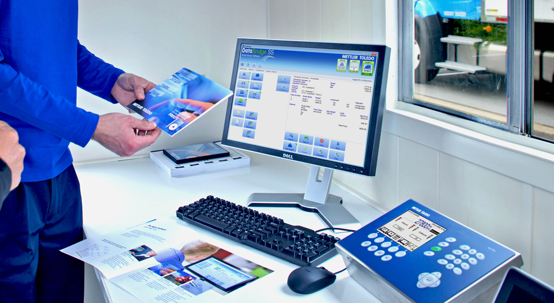
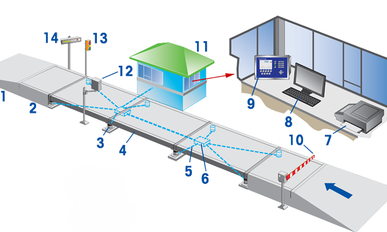
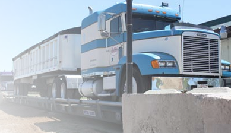
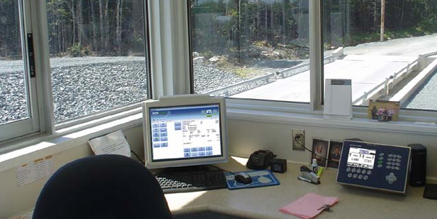

Mengenal komponen dasar
Hampir semua timbangan truk memiliki beberapa komponen umum yang bekerja sama untuk mengukur berat. Pembeli timbangan harus memahami komponen-komponen ini untuk menentukan timbangan yang paling sesuai dengan kebutuhan mereka.
Apa yang Diberitahukan Timbangan Truk kepada Kita dan Mengapa?
Untuk transaksi bisnis:
Berat kotor: berat truk yang dimuat
Berat tara: berat truk yang tidak dimuat
Berat bersih = Kotor - Tara
Untuk kepatuhan:
Beban maksimum: memastikan bahwa berat seluruh truk dan/atau muatan pada satu set as berada dalam kisaran yang sah untuk kendaraan jalan raya di wilayah tertentu
Baik membeli barang, menjual barang, mencatat inventaris, atau memeriksa kepatuhan, informasi dari timbangan truk sangat penting. Informasi ini digunakan untuk penetapan harga transaksi, margin keuntungan, kontrol kualitas, pengelolaan inventaris, kepatuhan hukum, dan banyak lagi.
Panduan ini ditujukan untuk membantu pengguna memperoleh informasi ini secara akurat, andal, dan efektif.
Komponen Utama Timbangan Truk
Pondasi
Timbangan dapat dipasang di atas galian, yang memungkinkan permukaan penggerak rata dengan tanah. Timbangan juga dapat dipasang dalam konfigurasi di atas tanah dengan pendekatan yang memungkinkan truk melaju ke atas dan ke luar timbangan. Apa pun itu, pemasangan permanen menggunakan pondasi beton.
Jembatan timbang
Juga dikenal sebagai dek timbangan, ini adalah struktur yang menciptakan permukaan penggerak untuk truk. Jembatan timbang biasanya terdiri dari bagian-bagian modular yang disatukan untuk membentang sepanjang yang diinginkan. Modul dapat dibuat seluruhnya dari baja dengan pelat baja sebagai permukaan penggerak. Modul juga dapat dirancang untuk diisi dengan beton, yang menciptakan permukaan penggerak beton.
Load Cells
Ini adalah sensor yang mengukur berat pada timbangan. Timbangan modern menggunakan sel beban sebagai komponen struktural integral. Dengan kata lain, jembatan timbang didukung oleh Load Cells itu sendiri. Ada beberapa jenis Load Cells. Biasanya, Load Cells diposisikan di sudut-sudut setiap modul jembatan timbang.
Terminal
Terminal, yang terkadang disebut juga sebagai indikator, merupakan panel kontrol untuk timbangan. Panel ini menampilkan nilai berat kepada operator, dan sering kali berfungsi sebagai titik koneksi untuk periferal timbangan lainnya.
Kabel
Sinyal dari Load Cells harus dikirimkan ke terminal. Dalam kebanyakan kasus, hal ini dilakukan dengan kabel.
Kotak Sambungan
Banyak timbangan memerlukan banyak kotak sambungan sebagai titik sambung untuk kabel sel beban. Kotak sambungan menggabungkan sinyal dari Load Cells dan akhirnya terhubung ke terminal dengan satu kabel. Namun, beberapa sistem yang lebih baru tidak lagi memerlukan kotak sambungan.
Manajemen Informasi
Tiket berat yang ditulis tangan telah digantikan dengan formulir cetak melalui printer terintegrasi. Perangkat lunak timbangan memainkan peran yang semakin penting untuk lokasi besar dan kecil. Perangkat lunak dapat mengotomatiskan pengambilan data, mempercepat waktu penimbangan, dan mengurangi peluang terjadinya kesalahan.
Aksesori
Ini dapat mencakup kontrol lalu lintas, seperti gerbang dan lampu. Tampilan berat jarak jauh yang memungkinkan pengemudi truk melihat berat juga populer. Peralatan khusus dapat dimasukkan ke dalam timbangan, seperti kamera dan sensor radiasi. Selain itu, beberapa lokasi memanfaatkan kemampuan otomatisasi dan layanan mandiri yang baru.
Truck Scale Site Location
Lokasi timbangan truk harus dipikirkan secara saksama:
• Apakah timbangan perlu menangani lalu lintas dalam satu arah atau dua arah?
• Apakah lokasi menyediakan ruang yang cukup bagi truk untuk bermanuver dengan mudah ke dan dari timbangan?
• Apakah ada area tunggu yang ditentukan sehingga truk yang mengantre tidak menghalangi lalu lintas di jalan raya?
• Apakah lokasinya datar, memiliki kapasitas menahan beban yang memadai dan ketahanan terhadap siklus beku/cair?
• Apakah lokasinya memiliki drainase yang memadai untuk menangani air hujan dan es atau salju yang mencair?
• Apakah lokasinya memiliki ruang untuk diperluas dengan menambahkan skala lain jika kebutuhan di masa mendatang bertambah?
Operasi Skala
Selain fondasi timbangan, lokasi timbangan sering kali mencakup rumah timbangan untuk operator timbangan. Operator dapat menyimpan catatan dengan menerbitkan tiket berat, mengonfirmasi pesanan pembelian, dan memasukkan nilai material ke inventaris. Mereka juga dapat berfungsi sebagai operator lokal untuk truk melalui interaksi radio dengan pengemudi. Terkadang rumah timbangan juga merupakan otoritas masuk dan keluar dari sudut pandang keamanan.
Dalam beberapa aplikasi, rumah timbangan digantikan oleh komponen yang memungkinkan pengemudi truk memproses transaksi mereka sendiri. Itu dapat memperlancar operasi dengan pengulangan tinggi atau variabel terbatas. Itu dapat dicapai melalui penggunaan kios drive-up yang diposisikan di samping timbangan atau kios walk-up di dekat timbangan.